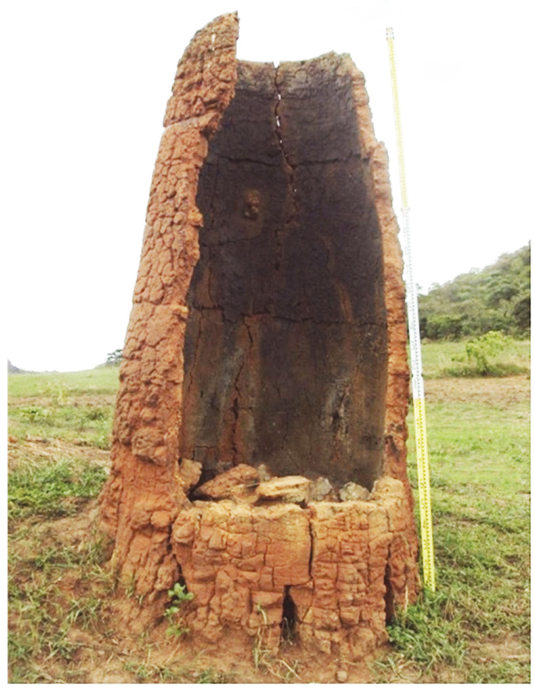

solidify. Fourthly, the solidified iron was heated until it became red hot. Then it was hammered into different shaped tools or weapons. The process of hammering iron into tools is known as forging. People who specialised in processing iron into iron tools and weapons were called ironsmiths. Figure 5.3 shows a kiln for iron extraction among the Fipa of Tanzania.

In East Africa, ironworking developed among the Meru, Kerewe, Haya, Fipa, and Baganda. Among the Pare, ironsmiths came from the royal Shana clan. Among the Zinza of Geita, iron smelting was taught to anyone who paid a fee to learn that skill. Similarly, iron technology developed among the Venda people of Southern